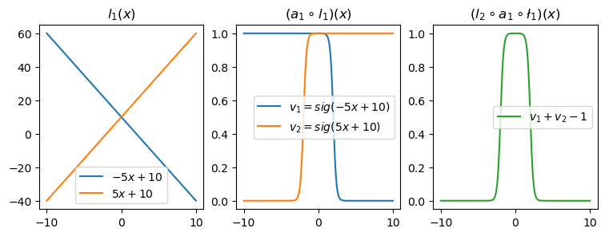

#{{<video https://youtu.be/playlist?list=PLQqh36zP38-y4BW27vnVa08AtMixu1IwL&si=v_BjoNGj2eVBht3Z >}}04wk-1: 깊은신경망 (2) – 꺽인그래프의 한계??, 시벤코정리, MNIST

1. 강의영상
2. Imports
import torch
import numpy as np
import matplotlib.pyplot as plt
import pandas as pd
#from fastai.data.all import *
#import torchvision
#import pathlib3. 꺽인그래프의 한계?
- 걱정: 지난시간에 배운 기술은 sig를 취하기 전이 꺽은선인 형태만 가능할 듯 하다. 그래서 이 역시 표현력이 부족할 듯 하다.
- 그런데 생각보다 표현력이 풍부한 편이다. 즉 생각보다 쓸 만하다.
A. Step은 표현 불가능하지 않나?
- 맞춰봐
torch.manual_seed(43052)
x = torch.linspace(-1,1,2000).reshape(-1,1)
u = 0*x-3
u[x<-0.2] = (15*x+6)[x<-0.2]
u[(-0.2<x)&(x<0.4)] = (0*x-1)[(-0.2<x)&(x<0.4)]
sig = torch.nn.Sigmoid()
v = π = sig(u)
y = torch.bernoulli(v)#plt.plot(u,alpha=0.2)
plt.plot(x,y,'.',alpha=0.01,color="C0")
plt.plot(x[0],y[0],'o',color="C0",label=r"observed data (with error): $(x_i,y_i)$")
plt.plot(x,v,'--',label=r"prob (true, unknown): $(x_i,\pi_i)$ or $(x_i,v_i)$",color="C1")
plt.legend()
- 저 주황색 구조를 어떻게 표현하지? \(\to\) 선이 많이 꺽이면되는거아냐?
\[\underset{(n,1)}{\bf X} \overset{l_1}{\to} \underset{(n,256)}{\boldsymbol u^{(1)}} \overset{a_1}{\to} \underset{(n,256)}{\boldsymbol v^{(1)}} \overset{l_1}{\to} \underset{(n,1)}{\boldsymbol u^{(2)}} \overset{a_2}{\to} \underset{(n,1)}{\boldsymbol v^{(2)}}=\underset{(n,1)}{\hat{\boldsymbol y}}\]
B. 곡선은 표현 불가능하지 않나?
- 맞춰봐1
1 2024년 수능 미적30번 문제에 나온 함수응용
\[y_i = e^{-x_i} \times |\cos(5x_i)| \times \sin(5x) + \epsilon_i, \quad \epsilon_i \sim N(0,\sigma^2)\]
torch.manual_seed(43052)
x = torch.linspace(0,2,2000).reshape(-1,1)
eps = torch.randn(2000).reshape(-1,1)*0.05
fx = torch.exp(-1*x)* torch.abs(torch.cos(3*x))*(torch.sin(3*x))
y = fx + epsplt.plot(x,y,label=r"observed data (with error): $(x_i,y_i)$", alpha=0.2)
plt.plot(x,fx,'--',color="C0",label=r"underlying (true, unknown): $e^{-x}|\cos(3x)|\sin(3x)$")
plt.legend()
- 맞춰본다..
\[\underset{(n,1)}{\bf X} \overset{l_1}{\to} \underset{(n,1024)}{\boldsymbol u^{(1)}} \overset{a_1}{\to} \underset{(n,1024)}{\boldsymbol v^{(1)}} \overset{l_1}{\to} \underset{(n,1)}{\boldsymbol u^{(2)}} \overset{a_2}{\to} \underset{(n,1)}{\boldsymbol v^{(2)}}=\underset{(n,1)}{\hat{\boldsymbol y}}\]
4. 시벤코정리
A. 시벤코의 정리 소개
Universal Approximation Thm: (범용근사정리,보편근사정리,시벤코정리)
하나의 은닉층을 가지는 아래와 같은 꼴의 네트워크 \(net: {\bf X}_{n \times p} \to {\bf y}_{n\times q}\)는
net = torch.nn.Sequential(
torch.nn.Linear(p,???),
torch.nn.Sigmoid(),
torch.nn.Linear(???,q)
)모든 continuous mapping
\[f: {\bf X}_{n \times p} \to {\bf y}_{n\times q}\]
를 원하는 정확도로 “근사”시킬 수 있다. 쉽게 말하면 \({\bf X} \to {\bf y}\) 인 어떠한 복잡한 규칙라도 하나의 은닉층을 가진 심층신경망(DNN)이 원하는 정확도로 근사시킨다는 의미이다. 예를들면 심층신경망은 아래와 같은 문제를 해결할 수 있다.
- \({\bf X}\)는 토익점수, GPA, 공모전참가여부, \({\bf y}\)는 취업여부일 경우 \({\bf X} \to {\bf y}\)인 규칙을 심층신경망은 항상 찾을 수 있다.
- \({\bf X}\)는 주택이미지, 지역정보, 주택면적, 주택에 대한 설명 \({\bf y}\)는 주택가격일 경우 \({\bf X} \to {\bf y}\)인 규칙을 심층신경망은 항상 찾을 수 있다.
즉 하나의 은닉층을 가진 심층신경망 모델의 표현력은 무한대라 볼 수 있다.
B. 왜 가능한가?
- 데이터
x = torch.linspace(-10,10,200).reshape(-1,1)- 아래와 같은 네트워크를 고려하자. (스펙올라도 취업못하는 예제에서 썼던 네크워크랑 비슷해요)
l1 = torch.nn.Linear(in_features=1,out_features=2)
a1 = torch.nn.Sigmoid()
l2 = torch.nn.Linear(in_features=2,out_features=1)- 직관1: \(l_1\),\(l_2\)의 가중치를 잘 결합하다보면 우연히 아래와 같이 만들 수 있다.
l1.weight.data = torch.tensor([[-5.00],[5.00]])
l1.bias.data = torch.tensor([+10.00,+10.00])l2.weight.data = torch.tensor([[1.00,1.00]])
l2.bias.data = torch.tensor([-1.00])fig,ax = plt.subplots(1,3,figsize=(9,3))
ax[0].plot(x,l1(x)[:,[0]].data,label=r"$-5x+10$")
ax[0].plot(x,l1(x)[:,[1]].data,label=r"$5x+10$")
ax[0].set_title('$l_1(x)$')
ax[0].legend()
ax[1].plot(x,a1(l1(x))[:,[0]].data,label=r"$v_1=sig(-5x+10)$")
ax[1].plot(x,a1(l1(x))[:,[1]].data,label=r"$v_2=sig(5x+10)$")
ax[1].set_title('$(a_1 \circ l_1)(x)$')
ax[1].legend()
ax[2].plot(x,l2(a1(l1(x))).data,color='C2',label=r"$v_1+v_2-1$")
ax[2].set_title('$(l_2 \circ a_1 \circ \l_1)(x)$')
ax[2].legend()
- 직관2: 아래들도 가능할듯?
l1.weight.data = torch.tensor([[-5.00],[5.00]])
l1.bias.data = torch.tensor([+0.00,+20.00])
l2.weight.data = torch.tensor([[1.00,1.00]])
l2.bias.data = torch.tensor([-1.00])
fig,ax = plt.subplots(1,3,figsize=(9,3))
ax[0].plot(x,l1(x).data.numpy(),'--',color='C0'); ax[0].set_title('$l_1(x)$')
ax[1].plot(x,a1(l1(x)).data.numpy(),'--',color='C0'); ax[1].set_title('$(a_1 \circ l_1)(x)$')
ax[2].plot(x,l2(a1(l1(x))).data,'--',color='C0'); ax[2].set_title('$(l_2 \circ a_1 \circ \l_1)(x)$');
ax[2].set_ylim(-0.1,2.6)
l1.weight.data = torch.tensor([[-5.00],[5.00]])
l1.bias.data = torch.tensor([+20.00,+00.00])
l2.weight.data = torch.tensor([[2.50,2.50]])
l2.bias.data = torch.tensor([-2.50])
fig,ax = plt.subplots(1,3,figsize=(9,3))
ax[0].plot(x,l1(x).data.numpy(),'--',color='C1'); ax[0].set_title('$l_1(x)$')
ax[1].plot(x,a1(l1(x)).data.numpy(),'--',color='C1'); ax[1].set_title('$(a_1 \circ l_1)(x)$')
ax[2].plot(x,l2(a1(l1(x))).data,'--',color='C1'); ax[2].set_title('$(l_2 \circ a_1 \circ \l_1)(x)$');
ax[2].set_ylim(-0.1,2.6)
- 직관3: 은닉층의노드수=4로 하고 적당한 가중치를 조정하면 \((l_2\circ a_1 \circ l_1)(x)\)의 결과로 주황색선 + 파란색선도 가능할 것 같다. \(\to\) 실제로 가능함
l1 = torch.nn.Linear(in_features=1,out_features=4)
a1 = torch.nn.Sigmoid()
l2 = torch.nn.Linear(in_features=4,out_features=1)l1.weight.data = torch.tensor([[-5.00],[5.00],[-5.00],[5.00]])
l1.bias.data = torch.tensor([0.00, 20.00, 20.00, 0])
l2.weight.data = torch.tensor([[1.00, 1.00, 2.50, 2.50]])
l2.bias.data = torch.tensor([-1.0-2.5])plt.plot(l2(a1(l1(x))).data,'--')
plt.title(r"$(l_2 \circ a_1 \circ l_1)(x)$")Text(0.5, 1.0, '$(l_2 \\circ a_1 \\circ l_1)(x)$')
이러한 함수는 계단모양이며, 0을 제외한 서로다른 계단의 높이는 2개가 된다. 이를 간단히 “2단계-계단함수”라고 칭하자.
- 정리1: 2개의 시그모이드를 우연히 잘 결합하면 아래와 같은 “1단계-계단함수” 함수 \(h\)를 만들 수 있다.
h = lambda x: torch.sigmoid(200*(x+0.5))+torch.sigmoid(-200*(x-0.5))-1.0plt.plot(x,h(x))
plt.title("$h(x)$")Text(0.5, 1.0, '$h(x)$')
- 정리2: 위와 같은 함수 \(h\)를 활성화함수로 하고 \(m\)개의 노드를 가지는 은닉층을 생각해보자. 이러한 은닉층을 사용한다면 “m단계-계단함수”와 같은 형태의 네트워크는 아래와 같이 표현할 수 있다.
\[\underset{(n,1)}{\bf X} \overset{l_1}{\to} \underset{(n,m)}{\boldsymbol u^{(1)}} \overset{h}{\to} \underset{(n,m)}{\boldsymbol v^{(1)}} \overset{l_2}{\to} \underset{(n,1)}{\hat{\boldsymbol y}}\]
그리고 위의 네트워크와 동일한 효과를 주는 아래의 네트워크가 항상 존재함.
\[\underset{(n,1)}{\bf X} \overset{l_1}{\to} \underset{(n,2m)}{\boldsymbol u^{(1)}} \overset{sig}{\to} \underset{(n,2m)}{\boldsymbol v^{(1)}} \overset{l_2}{\to} \underset{(n,1)}{\hat{\boldsymbol y}}\]
- 정리3: 그런데 어떠한 함수형태라도 구불구불한 “m단계-계단함수”로 다 근사할 수 있지 않나?
C. \(h\)의 위력
- \(h(x)\)를 활성화함수로 가지는 네트워크를 설계하여 보자.
- torch.nn.Module 클래스의 내용을 상속받음.
__init__은 torch.nn.Module과 동일하게 설정.- forward 함수를 재정의
class MyActivation(torch.nn.Module): ## 사용자정의 활성화함수를 선언하는 방법
def __init__(self):
super().__init__()
def forward(self, input):
return h(input) # activation 의 출력 a1 = MyActivation()
# a1 = torch.nn.Sigmoid(), a1 = torch.nn.ReLU() 대신에 a1 = MyActivation()- 아래와 같이 하나의 은닉층을 가지고 있더라도 많은 노드수만 보장되면 매우 충분한 표현력을 가짐
\[\underset{(n,1)}{\bf X} \overset{l_1}{\to} \underset{(n,m)}{\boldsymbol u^{(1)}} \overset{h}{\to} \underset{(n,m)}{\boldsymbol v^{(1)}} \overset{l_2}{\to} \underset{(n,1)}{\hat{\boldsymbol y}}\]
- \(h\)의 위력
예제1 – 스펙높아도 취업이 안된다고??
df = pd.read_csv("https://raw.githubusercontent.com/guebin/DL2024/main/posts/dnnex.csv")
x = torch.tensor(df.x).float().reshape(-1,1)
y = torch.tensor(df.y).float().reshape(-1,1)
prob = torch.tensor(df.prob).float().reshape(-1,1)예제2 – 수능에 나왔다던 이상한 곡선..?
torch.manual_seed(43052)
x = torch.linspace(0,2,2000).reshape(-1,1)
eps = torch.randn(2000).reshape(-1,1)*0.05
fx = torch.exp(-1*x)* torch.abs(torch.cos(3*x))*(torch.sin(3*x))
y = fx + epsD. 의문점
- 이 수업을 잘 이해한 사람: 그냥 활성화함수를 \(h\)로 쓰면 끝 아니야? 뭐하러 relu 를 쓰는거지?
- 딥러닝을 좀 공부해본사람1: 왜 딥러닝이 2010년이 지나서야 떳지? 1989년에 세상의 모든 문제가 풀려야 하는것 아닌가?
- 딥러닝을 좀 공부해본사람2: 하나의 은닉층을 표현하는 네크워크는 잘 안쓰지 않나? 은닉층이 많을수록 좋다고 들었는데?
- 약간의 의구심이 있지만 아무튼 우리는 아래의 무기를 가진 꼴이 되었다.
우리의 무기
하나의 은닉층을 가지는 아래와 같은 꼴의 네트워크로,
net = torch.nn.Sequential(
torch.nn.Linear(p,???),
torch.nn.Sigmoid(),
torch.nn.Linear(???,q)
)\(f: {\bf X}_{n \times p} \to {\bf y}_{n\times q}\) 인 모든 continuous mapping \(f\) 을 원하는 정확도로 “근사”시킬 수 있다.
5. MNIST 해결
A. 데이터 다운로드
untar_data('https://s3.amazonaws.com/fast-ai-imageclas/mnist_png.tgz')
100.03% [15687680/15683414 00:03<00:00]
Path('/home/cgb3/.fastai/data/mnist_png')B. 예비학습 – `plt.imshow()
- plt.imshow(...) 에서 ...이 shape이 (??,??)이면 흑백이미지를 출력
- plt.imshow(...) 에서 ...의 shape이 (??,??,3)이면 칼라이미지를 출력
- plt.imshow(...) 에서 ...의 자료형이 int인지 float인지에 따라서 인식이 다름
C. 예비학습 – pathlib
import pathlib- 오브젝트 생성
- 기능1 – .ls()
- 이미지 파일이 저장된 경로로 새로운 path오브젝트를 만들고 기능1 수행
- 기능2: / 로 새로운 path 생성하기
- 기능1,2의 결합
D. 데이터정리
- 데이터가 저장된 path 설정
- X ,y를 만듦
- 우리는 \({\bf X}: (n,1,28,28)\) 에서 \({\bf y}: (n,1)\)으로 가는 맵핑을 배우고 싶음. \(\to\) 이런건 배운적이 없는데?.. \(\to\) 그렇다면 \({\bf X}:(n,784) \to {\bf y}:(n,1)\) 으로 가는 맵핑을 학습하자.